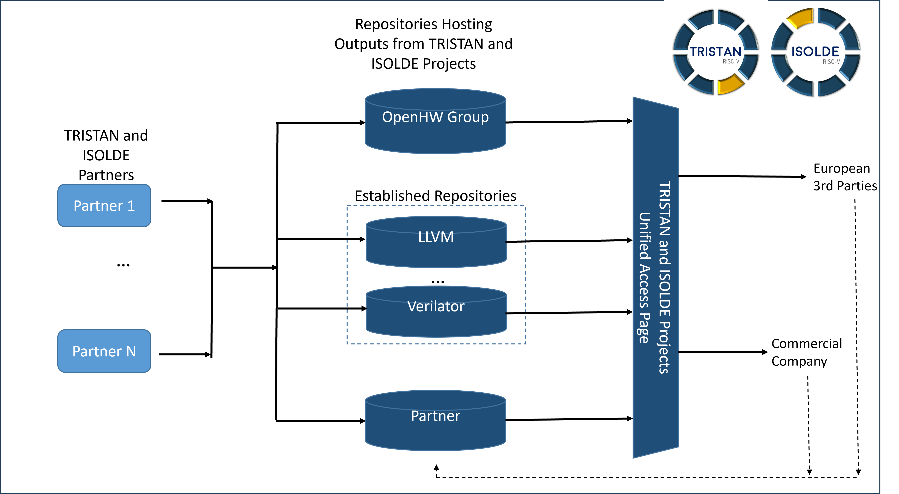

It provides references and descriptions of all the TRISTAN and ISOLDE IPs (hardware and software).
It serves as a Virtual Repository page, gathering all the information about the TRISTAN and ISOLDE repositories, their status,
and the TRISTAN and ISOLDE partners involved in them.
The TRISTAN and ISOLDE Unified Access Page acts like a static page, to provide a single access point to all the repositories TRISTAN and ISOLDE
contribute to. The updates and contributions will be upstreamed in the repository themselves.
Some of the repositories are hosted on the OpenHW Group GitHub forge, some are located on other public pages, and some are closed-source. The diagram below shows how the TRISTAN and ISOLDE repositories are organized.
The TRISTAN and ISOLDE Unified Access Page is the deliverable of the TRISTAN Task 2 of the Work Package 7 (7.2) and ISOLDE Work Package WP6.
| Repository | URL/Instructions | Project | Working Items | Partners | Status | Description | License |
|---|---|---|---|---|---|---|---|
| CVE2 | CVE2 | TRISTAN | WI2.2.5, WI2.2.8, WI2.5.8 | NXP, Synthara, Politecnico di Torino | Design and Verification in progress | Solderpad | |
| RVB / RVP Standard Extensions support for CV32E40P core | CV32E40P (fork) | TRISTAN | WI2.3.2 | CEA | Design and Verification in progress | Solderpad | |
| Extensions to the micro-architecture of CV32E40P core | CV32E40P (fork) | TRISTAN | WI2.3.3 | UNIBO | Design and Verification in progress | Solderpad | |
| VSRV: Simple 32-bit RISC-V Linux-Capable Core | VSRV | TRISTAN | WI2.3.5 | VLSI Solution | VSRV1 Released | Solderpad | |
| CVA6 | CVA6 | TRISTAN | WI2.4.1, WI2.4.2, WI2.4.3, WI2.4.5 | Thales, Sysgo, TU Darmstadt, Bosch | Design and Verification in progress | A configurable family of RISC-V application/embedded cores targetting FPGA and ASIC technologies | Solderpad |
| RVV coprocessor for CVA6 | RVV-coprocessor | TRISTAN | WI2.4.4 | ETH | Released | Solderpad | |
| Timing Channel Protection | timing-channel-protection | TRISTAN | WI2.1.1 | ETH | Released | Solderpad | |
| UVM env for RISC-V verif | core-v-verif | TRISTAN | WI2.4.1 | Thales | CVA6 verification in progress | Solderpad | |
| Compression and decompression of digital waveforms | Tristan | TRISTAN | WI2.5.11 | semify | Design and Verification in progress | To be determined | |
| TraceUnit | Not published yet | TRISTAN | WI2.1.4, WI2.2.1, WI2.3.4, WI2.5.4 | ACCT, FHG, MNRS, SYSGO | Design and Verification in progress | To be determined | |
| Hypervisor | H-extension | TRISTAN | WI2.5.10 | ETH, Sysgo | Released/td> | Solderpad | |
| Riviera: RISC-V ISA Extensions for NFC Applications | https://github.com/NXP-AT-RIVIERA/Riviera_core/tree/main | TRISTAN | WI2.5.1 | NXP Austria, Politecnico di Torino, Technical University of Graz | Design and Verification in progress | LA_OPT_NXP_Software_License |
| Repository | URL/Instructions | TRISTAN | Working Items | Partners | Status | Description | License |
|---|---|---|---|---|---|---|---|
| TSN-TraceBus | Not published yet | TRISTAN | WI3.1.1 | ACCT, BOSCH-DE, FHG, SYSGO | Design and Verification in progress | To be determined | |
| GPIO | GPIO (fork) | TRISTAN | WI3.1.3 | CEA | Design and Verification in progress | Solderpad | |
| UART 16750 | UART 16750 (fork) | TRISTAN | WI3.1.3 | CEA | Design and Verification in progress | Solderpad / LGPLv2.1 | |
| SPI Master | SPI Master (fork) | TRISTAN | WI3.1.3 | CEA | Design and Verification in progress | Solderpad | |
| HPDcache | github.com/openhwgroup/cv-hpdcache | TRISTAN | WI3.1.5 | CEA | Design and verification in progress | Solderpad | |
| CLIC | clic | TRISTAN | WI3.1.7 | ETH | Design and Verification in progress | Apache-2.0 | |
| AXI LLC | AXI-LLC | TRISTAN | WI3.1.5 | ETH | Released | Solderpad | |
| AXI | AXI | TRISTAN | WI3.2.1 | ETH | Released | Solderpad | |
| OBI interconnect | OBI Interconnect | TRISTAN | WI3.2.6 | CEA | Design and Verification in progress | Solderpad | |
| eFPGA | I:Embedded-fpga | TRISTAN | WI3.4.5 | YNGA | Verification in progress | An embedded FPGA IP to offload certain processor tasks and improve overall system performance | Solderpad |
| Accelerator for post-quantum cryptography | To do | TRISTAN | WI3.4.4 | TUM, Politecnico di Torino | Design in progress | To be determined | |
| Low-power IO DMA | IO DMA | TRISTAN | WI3.1.4 | UNIBO | Design and Verification in progress | Solderpad | |
| Heterogeneous Cluster Interconnect (HCI)) | HCI | TRISTAN | WI3.2.2 | UNIBO | Design and Verification in progress | Solderpad | |
| Low-power FP32/FP16 Accelerator for MatMul | RedMule | TRISTAN | WI3.4.1 | UNIBO | Design and Verification in progress | Solderpad |
| Repository | URL/Instructions | Project | Working Items | Partners | Status | Description | License |
|---|---|---|---|---|---|---|---|
| TimeWeaver | absint.com/timeweaver | TRISTAN | WI4.1.5 | AbsInt | Improved preview version available on request (support@absint.com) as part of the first complete software package (deliverable D4.2) | TimeWeaver is a hybrid measurement-based timing analysis tool to determine the WCET of safety-critical embedded software. As part of TRISTAN, it will be ported to include support for RISC-V processors using the TRISTAN trace IP. | proprietary |
| CompCert | github.com/AbsInt/CompCert | TRISTAN | WI4.2.4 | AbsInt | Waiting for WI2.5.4 | CompCert is a formally-verified optimizing C compiler. As part of TRISTAN, it will be extended to support the HSI (hardware-supported instrumentation) interface of the TRISTAN trace IP. | dual licensed (see repository) |
| Yocto for CVA6 | meta-cva6-yocto | TRISTAN | WI4.3.3 | Thales | Initial release | A linux image for a CVA6-based embedded processor | MIT |
| Setting up Yocto and baremetal debug on CVA6 | cva6-eclipse-demo | TRISTAN | WI4.3.3 | Thales | Initial release | Guidance to set up baremetal and Linux-based debug on CVA6 | Apache |
| End-to-end stack for ML software development on embedded RISC-V platforms | Plinio | TRISTAN | WI4.4.4 | Politecnico di Torino, UNIBO | Design in progress | A PyTorch-based library for implementing hardware-aware optimizations of AI models (NAS, pruning, quantization) with lightweight algorithms, and enable their subsequent compilation and deployment onto RISC-V targets. | Apache 2.0 |
| CMSIS like Open-Source AI, as well as DSP- and compute (e.g. BLAS) libraries | RiscV-NN | TRISTAN | WI4.4.1 | IFX, Politecnico di Torino, UNIBO, CEA | Design in progress | A set of extensions to the open-source PULP-NN library for accelerating AI workloads on RISC-V-based platforms (mainly but not limited to multi-core clusters). Extensions include kernels for fused depthwise-separable convolutions, attention layers, and N:M sparsity. | |
| COREV GCC | COREV GCC (fork) | TRISTAN | WI4.2.1 | UNIBO | Design and Verification in progress | The CORE-V GCC repository provides a fork of the GNU Compiler Collection (GCC) tailored for the CORE-V family of open-source RISC-V processor cores. It includes custom enhancements and optimizations to support CORE-V-specific architectural features and instructions. The fork provides the compiler backend support for the low-precision and mixed-precision extensions designed in TRISTAN. | GPL |
| COREV Binutils | COREV Binutils (fork) | TRISTAN | WI4.2.1 | UNIBO | Design and Verification in progress | The CORE-V binutils repository contains a customized version of the GNU binutils suite designed for the CORE-V family of RISC-V processor cores. It includes tools like the assembler, linker, and related utilities, enhanced to support CORE-V-specific instruction sets and architectural extensions. The fork adds the binary support required to assemble the low-precision and mixed-precision instructions in the TRISTAN extensions. | GPL |
| ELinOS embedded Linux for RISC-V | ELinOS | TRISTAN | WI4.3.2 | SYSGO | Has been released on 14 April 2024, see also press release. | ELinOS is an Embedded Linux distribution and industrial grade Linux with the user-friendly CODEO IDE to build state-of-the-art embedded solutions in a time-saving and cost-efficient manner; also dedicated support from SYSGO is available. ELinOS has strong focus on Security with container support and services, providing drivers, connectivity stacks, real-time extensions and support for industrial hardware (e.g. since long ARM, x86, PowerPC, and, since 2024, RISC-V). | GPL |
| PikeOS CVA-6 support | PikeOS | TRISTAN | WI4.3.3 | SYSGO | To be released | CVA6 is a 6-stage, single-issue, in-order CPU which implements the 64-bit RISC-V instruction set. PikeOS is a portable real-time operating system based on a separation kernel designed for the highest levels of Safety & Security. The PikeOS technology is certifiable by various certification standards including DO-178C, ECSS, EN 50128 / EN 50657, IEC 61508, and ISO 26262. We plan to support CVA-6 for PikeOS. | proprietary |
| LLVM TD from ADL | ADLTools | TRISTAN | WI4.2.1, WI4.2.3 | NXP | Design and verification in progress. For the CVA6 TIP implementation part of it, a pull request has been issued, but further integration with work from Uni Bologna is needed. | Generate LLVM target description file for RV32 architectures and corresponding instruction encoding, instruction scheduling model, assembler relocation tests automatically generated from an architectural description language (ADL). | BSD2 |
| Cloud Connector | Cloud Connector | TRISTAN | WI 4.3.4 | aicas | Implementation done. | Device Client is a group of software modules that run on JamaicaAMS. It securely connects to the Cloud (aicas EDP) to get device status and configuration information, and operates the configuration and OSGi bundle lifecycle on RISC-V devices. It contains several components that were customized for this project. | GPL |
| Device Client | Device Client | TRISTAN | WI 6.1.4 | aicas | Implementation done. Testing and validation in progress. | Cloud Connector is a software module that runs on JamaicaAMS and is used to exchange data with the cloud (customized aicas EDG) via the MQTT protocol. It is compatible with the OSGi specification and leverages the realtime capabilities of JamaicaAMS. It was newly developed by aicas for this project. | GPL |
| RISC-V Runtime | Not published yet | TRISTAN | WI4.4.1 | CEA | Design and verification in progress | A SDK that uses the MPFR as its backend has been delivered to experiment with variable precision in applications. | Apache |
| VxP Tools and Libraries | VXP binutils, VXP Devkit | TRISTAN | WI3.4.2, WI4.2.1, WI4.2.6, WI4.4.1 | CEA | Design and verification in progress | A subset of the GNU binutils v2.34 and v2.38 has been enhanced to support encoding/decoding of the RISC-V ISA extension for VXP. | Apache |
| Tool | URL/Instructions | Project | Working Items | Owner/Contributors | Users | Description | License | |
|---|---|---|---|---|---|---|---|---|
| Renode | Renode | TRISTAN | WI5.1.1 | Antmicro | Tampere University, NOKIA, Cargotec | Simulation Framework | ||
| ETISS | ETISS | TRISTAN | WI5.1.2 | Technische Universität München | Infineon | Extendible Translating Instruction Set Simulator | BSD 3-clause | |
| SCC | SCC | TRISTAN | WI5.1.4 | Minres | Bosch-DE, CEA | SystemC Components | ||
| PySysC | PySysC | TRISTAN | WI5.1.4 | Minres | Bosch-DE, CEA | Python bindings for SystemC | ||
| Core DSL | Core DSL | TRISTAN | WI5.1.4 | Minres | Bosch-DE, CEA | Language to describe ISAs for ISS generation and HLS of RTL implementation | ||
| DBT-RISE & DBT-RISE-RISCV | DBT-RISE DBT-RISE-RISCV | TRISTAN | WI5.1.4, WI5.3.2 | Minres | Bosch-DE, CEA,ACC | Dynamic Binary Translation - Retargetable ISS Environment Application of CoreDSL & DBT-RISE for RISCV | ||
| Verilator | Verilator | TRISTAN | WI5.2.1 | Antmicro | CEA | RTL verification (simulation, formal) Co-simulation with Renode | ||
| Questa Verify Property App | Questa | TRISTAN | WI5.2.2 | Siemens EDA | Thales SA | Formal verification solutions for RISC-V (OneSpin) | ||
| Yosys | Yosys | TRISTAN | WI5.2.5 | TBD | CEA | Open Synthesis Suite | ||
| Catapult | Catapult | TRISTAN | WI5.2.7 | Siemens EDA | Siemens-AT | High Level Synthesis and verification suite | ||
| Kactus2 | Kactus2 | TRISTAN | WI5.2.9, WI5.3.3 | Minres, Tampere University | Tampere University, NOKIA, Cargotec | High Level Synthesis and verification suite | ||
| Codasip Studio | Codasip Studio | TRISTAN | WI5.1.3 | Codasip | Bosch – DE, Bosch – FR, Minres | Tool suite to develop/customize RISC-V IPs | ||
| GVSOC | GVSOC (fork) | TRISTAN | WI5.1.5 | UNIBO | Politecnico di Torino | RISC-V Platform Simulator | Apache-2.0 | |
| Messy | TBD | TRISTAN | WI5.1.6 | Politecnico di Torino | UNIBO | Multi-layer Extra-functional Simulator using SYstemC | ||
| Spike | Spike | TRISTAN | WI5.1.7 | OpenHW Group | Thales, Synthara | RISC-V ISA simulator | ||
| VPTOOL | VPTOOL | TRISTAN | WI5.1.8 | OpenHW Group | Thales, Siemens-AT | Graphical edition of a Design Verification Plan | ||
| SoCDSL | TBD | TRISTAN | WI5.3.1 | Technische Universität Darmstadt | Minres, Tampere University | Automated composition and optimization of compute-intensive SoCs from abstract high-level descriptions | ||
| cv_dv_utils | CV_DV_UTILS | TRISTAN | WI3.1.5 | OpenHW Group | CEA | UVM verification environment for OpenHW cores | Apache-2.0 | |
| Co-processor Generator Tool | Not published yet | TRISTAN | WI2.5.6 | Tampere University | TBD | Tool to generate CV-X-IF compliant co-processors based on user definition of operations/instructions. | TBD | |
| SUNRISE | Not published yet | TRISTAN | WI5.1.3 | BOSCH-DE | BOSCH-DE, Codasip, Minres | Scalable UNified Restful Infrasructure for System Evaluation. | TBD | |
| kMLeon | Not published yet | TRISTAN | WI5.1.4 and WI5.3.6 | CEA | CEA | ML-based tool for the automatic generation of extra-functional models (e.g. performance, power). | TBD | |
| uArchiFI | uArchiFI | TRISTAN | WI5.2.5 and WI5.3.6 | CEA | CEA | Formal tool for analyzing the robustness of embedded systems against fault injection attacks by combining the RTL of a processor, the binary of a software, and an attacker model. | Mozilla Public License | |
| k-FRP | k-FRP | TRISTAN | WI5.2.5 and WI5.3.6 | CEA/TU Graz | CEA | Formal tool for analyzing the robustness of HW countermeasures to secure embedded systems against fault injection attacks. Optional step within µArchiFI | Apache License |
| Repository | URL/Instructions | Project | Working Items | Partners | Status | Description | License | |
|---|---|---|---|---|---|---|---|---|
| NOEL-V processor extensions | Not yet avaliable | ISOLDE | ID 2.1.01 | GSL | TBD | GPL | GPL | |
| CVA6 processor extensions | ISOLDE | ID 2.1.02 | TDIS | TBD | Solderpad | Solderpad | ||
| CV32E40X processor extensions | ISOLDE | ID 2.1.03 | HM | TBD | MIT | MIT | ||
| Testing Design Parameters for CVA6 | ISOLDE | ID 2.1.04 | UZL | TBD | Open Source | Open Source | ||
| Analysis Framework | ISOLDE | ID 2.1.05 | IFX | TBD | Proprietary | Proprietary |
| Repository | URL/Instructions | Project | Working Items | Partners | Status | Description | License | |
|---|---|---|---|---|---|---|---|---|
| Context-Aware Bus | ISOLDE | ID 2.2.01 | TRT | TBD | Solderpad | Solderpad | ||
| Wormhole NoC | NoC | ISOLDE | ID 2.2.02 | UPV | Work in progress | In this architecture, all the communication among tiles is carried out through the network. A tile is an abstraction entity that encapsulates one or more IPs of a SoC and provides an AXI Memory-Mapped interface to them. The main components of every tile are the on-chip network switch, the Network Interface (NI), and a placeholder (a.k.a. UNIT), which is used to implement the desired Intellectual Property (IP) or Processing Element (PE). | MIT | MIT |
| AXI Sniffer | AXI Sniffer | ISOLDE | ID 2.2.03 | UPV | Completed | This module monitors axi4 transactions and determines contention between the different initiators of transactions. The initiators of transactions are given by a world ID encoded in the QoS field of the AXI channels. Supports following contention tracking features: read contention monitoring backpressure channels, read contention blaming the head of the queue for all contention caused in the queue, cross read-write backpressure, write backpressure monitoring, cross write-read backpressure. | MIT | MIT |
| AHB Crossbar | ISOLDE | ID 2.2.04 | IFX | TBD | TBD | TBD | ||
| AHB/APB Interrupt Controller | ISOLDE | ID 2.2.05 | IFX | TBD | TBD | TBD | ||
| AHB/APB Timer | ISOLDE | ID 2.2.06 | IFX | TBD | TBD | TBD | ||
| GRLIB IP library | https://www.gaisler.com/getgrlib | ISOLDE | ID 2.2.07 | GSL | TBD | GPL | GPL | |
| Hypervisor virtualization support to low-cost HW IPs | ISOLDE | ID 2.2.08 | FENTISS | TBD | Proprietary | Proprietary |
| Repository | URL/Instructions | Project | Working Items | Partners | Status | Description | License | |
|---|---|---|---|---|---|---|---|---|
| Context-Aware CORE Extensions | ISOLDE | ID 2.3.01 | TRT | TBD | Solderpad | Solderpad | ||
| Memory bank interface | ISOLDE | ID 2.3.02 | FotoNation | TBD | Open Source | Open Source | ||
| Extension interface for NOEL-V | Not yet avaliable | ISOLDE | ID 2.3.03 | GSL | TBD | GPL | GPL | |
| Extension interface for CVA6 | ISOLDE | ID 2.3.04 | TDIS | TBD | Solderpad | Solderpad | ||
| Interface between CVA6 and Vector accelerator | https://github.com/pulp-platform/ara (branch: mp/xif , commit: f06204b ) | ISOLDE | ID 2.3.05 | ETHZ | Prototype. To be updated with the final release of CV-X-IF in CVA6 | Prototype of CV-X-IF between CVA6 and RVV 1.0 vector processor, used for evaluation | Solderpad | Solderpad |
| Repository | URL/Instructions | Project | Working Items | Partners | Status | Description | License | |
|---|---|---|---|---|---|---|---|---|
| XNG NOEL-V BSP update to RISC-V new specifications | ISOLDE | ID 2.4.01 | FENTISS | TBD | Proprietary | Proprietary | ||
| CVA6 multicore experiments and analysis | ISOLDE | ID 2.4.02 | SYSGO | TBD | TBD | TBD | ||
| SW Abstraction Layer for RISC-V Processors | ISOLDE | ID 2.4.03 | IFX | TBD | Proprietary | Proprietary | ||
| NOEL-V software tools | ISOLDE | ID 2.4.04 | GSL | TBD | GPL | GPL |
| Repository | URL/Instructions | Project | Working Items | Partners | Status | Description | License | |
|---|---|---|---|---|---|---|---|---|
| Safety-related Traffic Injector | https://github.com/bsc-loca/SafeTI/ | ISOLDE | ID 3.1.01 | BSC | TBD | MIT | MIT | |
| IPs with integrated Context-Aware PMCs | ISOLDE | ID 3.1.02 | TRT | TBD | TBD | TBD | ||
| Forward-Edge Control Flow Integrity Unit | ISOLDE | ID 3.1.03 | NXP-AT | TBD | Proprietary | Proprietary | ||
| Backward-Edge Control Flow Integrity Unit | ISOLDE | ID 3.1.04 | NXP-AT | TBD | Proprietary | Proprietary | ||
| Cryptographically Tagged Memory Unit | ISOLDE | ID 3.1.05 | NXP-AT | TBD | Proprietary | Proprietary | ||
| Enclave Memory Isolation Unit | ISOLDE | ID 3.1.06 | NXP-AT | TBD | Proprietary | Proprietary | ||
| Lightweight Tweakable Inline Memory Encryption Engine | ISOLDE | ID 3.1.07 | NXP-AT | TBD | Proprietary | Proprietary | ||
| Memory subsystem support for Bytecode VMs | ISOLDE | ID 3.1.08 | HM | TBD | MIT | MIT | ||
| Root-of-Trust Unit Design and Interface with RISC-V Host Processor (TitanCFI) | https://github.com/pulp-platform/opentitan | ISOLDE | ID 3.1.10 | UNIBO | TBD | Solderpad | Solderpad | |
| Integration and support in XNG hypervisor for SafeTI and SafeSU IPs | ISOLDE | ID 3.1.11 | FENTISS | TBD | Proprietary | Proprietary | ||
| Safety Control | ISOLDE | ID 3.1.12 | IFX | TBD | TBD | TBD | ||
| High-Performance Cache Analysis | ISOLDE | ID 3.1.13 | SYSGO | TBD |
| Repository | URL/Instructions | Project | Working Items | Partners | Status | Description | License | |
|---|---|---|---|---|---|---|---|---|
| Floating-Point Unit (FPU) for RISC-V | ISOLDE | ID 3.2.01 | UZL | TBD | Open Source | Open Source | ||
| FPU for mixed-precision computing | ISOLDE | ID 3.2.02 | POLIMI | TBD | Multiple | Multiple | ||
| Scratchpad Memory | ISOLDE | ID 3.2.03 | IMT | TBD | GPL v3.0 | GPL v3.0 | ||
| Safety-related Statistics Unit (SafeSU) | https://github.com/bsc-loca/SafeSU/ | ISOLDE |
| Repository | URL/Instructions | Project | Working Items | Partners | Status | Description | License | |
|---|---|---|---|---|---|---|---|---|
| ID 3.3.01 | BSC | TBD | MIT | MIT | ||||
| Time Contract Monitoring Co-Processor (TCCP) | TCCP | ISOLDE | ID 3.3.02 | OFFIS | Work in progress; | The Time Contract Co-Processor (TCCP), a reconfigurable open-source co-processor for RISC-V systems. | Apache V2.0 | |
| Context-Aware PMC Interface (CA-PMC-IF) | ISOLDE | ID 3.3.03 | TRT | TBD | TBD | TBD | ||
| Run-time power monitoring instrumentation (RTPM) | ISOLDE | ID 3.3.04 | POLIMI | TBD | Proprietary | Proprietary |
| Repository | URL/Instructions | Project | Working Items | Partners | Status | Description | License | |
|---|---|---|---|---|---|---|---|---|
| Tensor Processing Unit (TPU) | https://github.com/pulp-platform/redmule | ISOLDE | ID 3.4.01 | UNIBO | TBD | Solderpad | Solderpad | |
| Parallel Computing Accelerator (PCA) | ISOLDE | ID 3.4.02 | POLITO | TBD | Solderpad | Solderpad | ||
| AI/ML Accelerator (AMA) | ISOLDE | ID 3.4.03 | FotoNation | TBD | Proprietary | Proprietary | ||
| Vector Processing Unit (with multi-precision capabilities) (VPU) | https://github.com/pulp-platform/ara | ISOLDE | ID 3.4.04 | ETHZ | Optimization, verification, and feature addition in progress | RISC-V V 1.0 modular vector accelerator with multi-precision capabilities | Solderpad | Solderpad |
| CNN Accelerator for an Event-based Sparse Neural Networks (ECNNA) | ISOLDE | ID 3.4.05 | SAL | TBD | Proprietary | Proprietary | ||
| SIMD/Vector Accelerator | ISOLDE | ID 3.4.06 | IMT | TBD | GPL v3.0 | GPL v3.0 | ||
| SIMD/Vector Accelerator | ISOLDE | ID 3.4.07 | TUI | TBD | TBD | TBD |
| Repository | URL/Instructions | Project | Working Items | Partners | Status | Description | License | |
|---|---|---|---|---|---|---|---|---|
| HLS-based Post-Quantum Cryptographic Accelerator (HLS-PQC) | To be published | ISOLDE | ID 3.5.01 | BSC | TBD | Solderpad | Solderpad | |
| Multipurpose Accelerator for PQC | ISOLDE | ID 3.5.02 | SAL | TBD | Proprietary | Proprietary | ||
| Accelerator for post-quantum key encapsulation mechanism BIKE (ACC-BIKE) | ISOLDE | ID 3.5.03 | POLIMI | TBD | Proprietary | Proprietary | ||
| Number Theoretic Transform Algorithms for Post Quantum Cryptography (NTT) | ISOLDE | ID 3.5.04 | IMT | TBD | GPL v3.0 | GPL v3.0 | ||
| Secured RISC-V Processor with Cryptographic Accelerators (SEC) | Not ready yet | ISOLDE | ID 3.5.05 | BEIA | TBD | GPL v3.0 | GPL v3.0 |
| Repository | URL/Instructions | Project | Working Items | Partners | Status | Description | License | |
|---|---|---|---|---|---|---|---|---|
| Motor Control accelerator | ISOLDE | ID 3.6.01 | CODA, BUT, NXP-CZ | TBD | Proprietary | Proprietary | ||
| SCA | ISOLDE | ID 3.6.02 | ACP | TBD | Proprietary | Proprietary | ||
| LDPC | ISOLDE | ID 3.6.03 | ACP | TBD | Proprietary | Proprietary | ||
| Neuromorphic HW Accelerator | Not ready yet | ISOLDE | ID 3.6.04 | POLITO | TBD | Solderpad | Solderpad | |
| Fast Fourier Transform Algorithms for SIMD and Vector Accelerators (FFT) | ISOLDE | ID 3.6.05 | IMT | TBD | GPL v3.0 | GPL v3.0 |
| Repository | URL/Instructions | Project | Working Items | Partners | Status | Description | License | |
|---|---|---|---|---|---|---|---|---|
| Neural Network Drivers | ISOLDE | ID 4.1.01 | POLITO | TBD | Apache V2.0 | Apache V2.0 | ||
| AI/ML Accelerator driver | ISOLDE | ID 4.1.02 | FotoNation | TBD | Multiple | Multiple | ||
| Optimization of WebAssembly Interpreter | ISOLDE | ID 4.1.03 | HM | TBD | Apache V2.0 | Apache V2.0 | ||
| Use of device tree abstraction for Linux on RISC-V | ISOLDE | ID 4.1.05 | CONS, SYSGO | TBD | Open Source | Open Source | ||
| Execution Framework for Space edge computing | ISOLDE | ID 4.1.06 | TASI | TBD | Proprietary | Proprietary | ||
| Run-Time Environment for end-users | ISOLDE | ID 4.1.07 | UPB | TBD | Multiple | Multiple | ||
| PikeOS support for multicore CVA6 | Not applicable | ISOLDE | ID 4.1.08 | SYSGO | TBD | Proprietary | Proprietary | |
| XNG BSP to CVA-6 processor core | ISOLDE | ID 4.1.09 | FENTISS | TBD | Proprietary | Proprietary | ||
| Development of System Software | ISOLDE | ID 4.1.10 | TUI | TBD | Open Source | Open Source | ||
| Lauterbach support for CVA6 (instructions how to use Lauterbach on CVA6) | https://www.sysgo.com/blog/article/interfacing-multi-core-cva6-on-the-risc-v-culsans-platform-with-lauterbach | ISOLDE | ID 4.1.11 | SYSGO | Done and instructions shared. | Instructions on using Lauterbach on a multicore System-on-Chip (SoC) platform—Culsans—featuring two CVA6 RISC-V cores. This SoC is deployed on a Genesys2 development board, and a key focus of our effort has been enabling efficient debugging capabilities with Lauterbach's TRACE32, an industry-standard debugging suite. | Public domain (CC0) for the Vivado/Lauterbach debugger configuration code contained therein. | Public domain (CC0) for the Vivado/Lauterbach debugger configuration code contained therein. |
| Repository | URL/Instructions | Project | Working Items | Partners | Status | Description | License | |
|---|---|---|---|---|---|---|---|---|
| Toolchain for Hardware-aware Neural Network Optimization | ISOLDE | ID 4.2.01 | POLITO | TBD | Apache V2.0 | Apache V2.0 | ||
| RF-SP: Resource-efficient IoT data processing and analytics | ISOLDE | ID 4.2.02 | BYK | TBD | Apache V2.0 | Apache V2.0 | ||
| Model-based generation framework for hardware safety pattern | ISOLDE | ID 4.2.03 | FZI | TBD | TBD | TBD | ||
| Compiler Support for Approximate Computing | ISOLDE | ID 4.2.04 | POLIMI | TBD | MIT | MIT | ||
| AI/ML Accelerator Compiler Toolchain | ISOLDE | ID 4.2.05 | FotoNation | TBD | Proprietary | Proprietary | ||
| TPU HAL | ISOLDE | ID 4.2.06 | UNIBO | TBD | Apache V2.0 | Apache V2.0 | ||
| HAL for RoT unit as a secure-coprocessor | ISOLDE | ID 4.2.07 | UNIBO | TBD | Apache V2.0 | Apache V2.0 | ||
| CFI software algorithm in OT firmware | ISOLDE | ID 4.2.08 | UNIBO | TBD | Apache V2.0 | Apache V2.0 | ||
| OT-based secure boot support (TitanBoot) | ISOLDE | ID 4.2.09 | UNIBO | TBD | Apache V2.0 | Apache V2.0 | ||
| OpenMP Lite | ISOLDE | ID 4.2.10 | NXP-RO | TBD | Proprietary | Proprietary | ||
| LLVM and debugger support for Forward-edge CFI | ISOLDE | ID 4.2.11 | NXP-AT | TBD | Proprietary | Proprietary | ||
| LLVM and debugger support for backward-edge CFI | ISOLDE | ID 4.2.12 | NXP-AT | TBD | Proprietary | Proprietary | ||
| LLVM and debugger support for cryptographically tagged memory | ISOLDE | ID 4.2.13 | NXP-AT | TBD | Proprietary | Proprietary | ||
| Debugger support for enclave memory isolation | ISOLDE | ID 4.2.14 | NXP-AT | TBD | Proprietary | Proprietary | ||
| LLVM/MLIR extensions for PQC and CNN accelerators by SAL | ISOLDE | ID 4.2.15 | SAL | TBD | Multiple | Multiple | ||
| Intel Shuttle Program | ISOLDE | ID 4.2.16 | INTEL | TBD | ||||
| Support for SIMD/Vector Accelerator and scratchpad memory | ISOLDE | ID 4.2.17 | IMT | TBD | GPL v3.0 | GPL v3.0 | ||
| Safety Compliant Math and Motor Control Library | Not applicable | ISOLDE | ID 4.2.18 | NXP-CZ | TBD | Proprietary | Proprietary | |
| Basic toolchain for the many-core parallel accelerator | ISOLDE | ID 4.2.19 | UPB | TBD | Multiple | Multiple |
| Repository | URL/Instructions | Project | Working Items | Partners | Status | Description | License | |
|---|---|---|---|---|---|---|---|---|
| Integrate system level simulators with extra-functional properties | ISOLDE | ID 4.3.01 | POLITO | TBD | Apache V2.0 | Apache V2.0 | ||
| Time Contract Co-processor Compiler (TCCP-CO) | TCCP | ISOLDE | ID 4.3.02 | OFFIS | Work in progress | The Time Contract Co-Processor (TCCP) Compiler, a compiler providing the TCCP with a micro program for monitoring, based on contracts and software artifacts. | Apache V2.0 | |
| Power/Performance Modeling for Design Space Exploration PPM-DSE | ISOLDE | ID 4.3.03 | SILVACO | TBD | Proprietary | Proprietary | ||
| Bit-accurate FPGA fault injection (BAFFI) tool | BAFFI | ISOLDE | ID 4.3.04 | UPV | Work in progress | BAFFI supports bit-accurate fault injection into Ultrascale+ and 7-series AMD FPGAs. Supports transient fault models representative for FPGA and ASIC designs. Adapted to the SELENE (NOEL-V) SoC in VCU118 evaluation board. | MIT | MIT |
| Simulation-based HW/SW co-verification approach | ISOLDE | ID 4.3.05 | FZI | TBD | TBD | TBD | ||
| Software simulator for the AI/ML Accelerator | ISOLDE | ID 4.3.06 | FotoNation | TBD | Proprietary | Proprietary | ||
| Verilator-based Fault-Injection Framework | ISOLDE | ID 4.3.07 | HM | TBD | LGPL 3.0, Apache V2.0 | LGPL 3.0, Apache V2.0 | ||
| Open-Source Verification Flow for High Performance Cores, Accelerators and Demonstrators | ISOLDE | ID 4.3.08 | IFX, HM | TBD | Open Source | Open Source | ||
| Tooling to ensure compliance with multicore timing certification objectives | ISOLDE | ID 4.3.09 | RAPITA | TBD | Proprietary | Proprietary | ||
| Optimizing WCET with LAVINIUM Toolchain: A Scheduling Solution for Improved Reliability | ISOLDE | ID 4.3.10 | POLIMI | TBD | Open Source | Open Source | ||
| Fault-Injection-Analysis of FPU Unit | ISOLDE | ID 4.3.11 | UZL | TBD | Open Source | Open Source | ||
| XNG hypervisor integration of validation tools | ISOLDE | ID 4.3.12 | FENTISS | TBD | Proprietary | Proprietary | ||
| Hypervisor runtime fault diagnosis tests integration | ISOLDE | ID 4.3.13 | FENTISS | TBD | Proprietary | Proprietary |
TRISTAN has received funding from the Chips Joint Undertaking (Chips JU) under grant agreement nr. 101095947. The Chips JU receives support from the European Union’s Horizon Europe’s research and innovation programmes and participating states are Austria, Belgium, Bulgaria, Croatia, Cyprus, Czechia, Germany, Denmark, Estonia, Greece, Spain, Finland, France, Hungary, Ireland, Israel, Iceland, Italy, Lithuania, Luxembourg, Latvia, Malta, Netherlands, Norway, Poland, Portugal, Romania, Sweden, Slovenia, Slovakia, Turkey.


The ISOLDE project, nr. 101112274 is supported by the Chips Joint Undertaking and its members Austria, Czechia, France, Germany, Italy, Romania, Spain, Sweden, Switzerland.